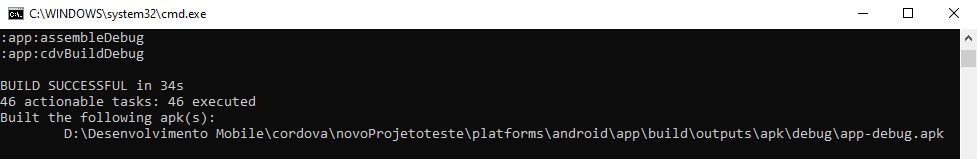
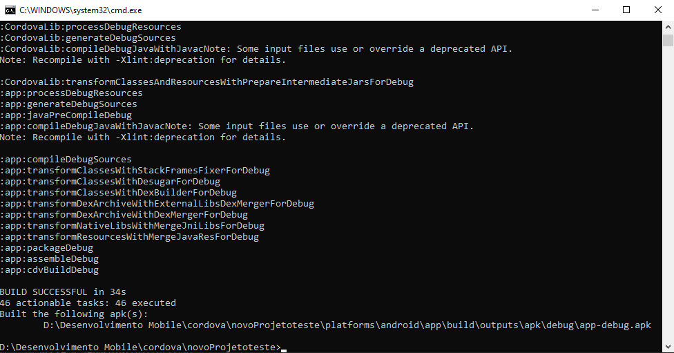

Usando plugin Google Play Games no Android com Cordova CLI
Usando plugin Google Play Games no Android com Cordova CLI

Em conversa com meu amigo Elmer, Reinarte Games, sobre compilação
Android, um dos maiores problemas era utilizar os serviços da Google, como login, ranking, conquistas. Desde o encerramento do serviço de
compilação para Android e IOS da Coccon, um enorme nuvem de
dúvidas surgiu, "quem iria manter a compilação android e IOS funcionando", eu particularmente nunca fui muito fã do
serviço da Coccon, como já mencionei em outros tutoriais.
Procurei informações sobre e quais ferramentas era utilizado no para compilar, descobri que eles utilizam o
Cordova e que esta ferramenta é de código aberto, portanto eu poderia
utilizar e eventualmente fazer alterações.
Um plugin que era utilizado para utilização dos serviços da Google era o
cordova-plugin-game, porém o plugin que
não recebe atualizações há 3 anos, na época suportando apenas a Cordova Android apenas na versão 6.0.0, conforme a própria documentação do plugin.
Portanto a plataforma Cordova vem recebido atualizações periodicamente, nesta data que estou escrevendo este artigo, a plataforma
Cordova está na versão "9.0.0" e o Cordova Android "8.0.0".
Fiz algumas alterações no Plugin do Construct 2, você pode baixar ele pelo link
Plugin Cordova Game para Construct 2, instalar na pasta de
Plugins do seu Construct 2.
Agora finalmente vamos direto ao ponto.
Para entender o processo, primeiro você precisa saber como utilizar o
Construct 2 - Trabalhando com Cordova CLI, pronto.
Pegamos os plugins que o Cordova baixa, fizemos algumas alterações e fiz upload deles no meu github.
Com o projeto Cordova CLI aberto, adicione o plugin utilizando esta linha de comando abaixo.
cordova plugin add https://github.com/guimaraf/cordova-plugin-game --variable APP_ID="COLOQUE SUA ID DA GOOGLE PLAY GAMES AQUI"cordova plugin add https://github.com/guimaraf/cordova-plugin-game --variable APP_ID="123456789012"Na data de hoje, 19 de julho de 2019, atualizei os plugins para que seja possível utilizar a plataforma "Cordova CLI Android 8.0.0" para API 28, conforme os requisitos da loja da google.
Foi utilizado a referência para a versão do google play services 16+, que tem suporte na API 28 "Android 9", desta forma mantendo a compatibilidade com atualis pugins para ADS, Ultimate ADS versão 1.0.12 e Unity ADS, que já criei artigos sobre na página. No próximo mês "agosto de 2019" a google vai encerrar o suporte para aplicativos da loja com API 27 e anteriores. Qualquer dúvida me contacte.

Caso ocorrer um erro do módulo do Node "xml2js", instale usando o comando.
npm install xml2jsSe solicitar o modulo do Node "semver", instale com o comando abaixo.
npm install semverAgora mande gerar o APK em modo debug, use o comando.
cordova build
Testando no aparelho, deverá aparecer esta mensagem de erro, indicando que o plugin tentou comunicar com os serviços google, porém o aplicativo está rodando em modo debug por isso gera este erro de login. Depois de assinar e subir para a loja, vai logar normalmente.

Se seu ambiente estiver configurado corretamente, vai compilar o projeto normalmente.
Agora pode testar seu jogo, será mostrado uma mensagem de erro de login que é normal, pois os serviços da Google Play Games só
funcionam nos aplicativos baixados da loja.
Para mais detalhes sobre como gerar APK, assinar, veja este tutorial
Gerando APK pelo Cordova CLI.
Por enquanto é isso, o processo foi bem trabalhoso, porém foi muito prazeroso conseguir ver tudo funcionando. O plugin foi usado no jogo,
Impossible Double Tap
está funcionando perfeitamente.
Qualquer dúvidas, não deixe de perguntar.